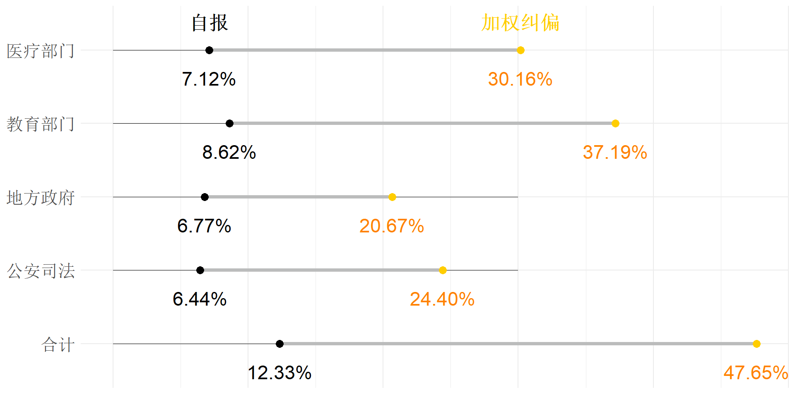

基层非正规经济行为
感知现状及其影响
第三届廉政与治理工作坊
胡悦
清华大学政治学系
2023-11-11
“太长不读”
- 话题
- 基层非正规经济行为感知的全国分布与政治后果
- 方法
- 全国代表性调查（N = 2,581）
- 列举实验权重矫正
- 发现
- 基层非正规经济行为感知具有高敏感性（→ 传统调查偏差）
- 基层非正规经济行为感知反映廉政建设成效
- 基层非正规经济行为感知直接影响执政合法性
- 结论
- 准确理解基层感知，推进以人民为中心的廉政建设
- 充分重视基层非正规经济行为严重后果， 实现精准腐败治理
研究问题
腐败治理研究已知与未知
- 非正规经济行为影响
- 制度、非正规政府行为、政权合法性(倪星 and 陈珊珊 2013; Manion 2004; Claypool et al. 2018)
- 经济发展(孙刚, 陆铭, and 张吉鹏 2005; 吴一平 and 朱江南 2012; Gong and Zhou 2015; Tsai 2007)
- 国别与类型差异(张远煌 and 彭德才 2017; Bardhan 2009; Ramirez 2014)
- 非正规经济行为治理
- 精英政治(陈刚 2013; 聂辉华 and 王梦琦 2014; Jiang and Yang 2016)
- 制度化(王沪宁 1995, 1995; 朱光磊 and 盛林 2006; Ang 2020)
- 有待研究
- “苍蝇”在哪？(倪星 and 陈珊珊 2013; 吴一平 and 朱江南 2012; 朱琳 and 陈雨晴 2022)
- 民心何向？(公婷 2016; 王哲, 孟天广, and 顾昕 2016; 朱琳 2017; 朱琳 and 宫伏佳 2015)
基层非正规经济行为：中国场景与世界之问
中国场景：“苍蝇”的分布情况
“世界之问”：如何有效衡量腐败感知
- 传统问卷研究偏差

- 实验研究生态效能
- “实验方法对腐败行为的识别只能停留在实验情境中” (朱琳 2017, 178)

研究目标
- 基层非正规经济行为的去偏估计
- 传统调查方法会严重低估基层非正规经济行为感知程度。
- 基层非正规经济行为的政治影响
- 腐败治理
- 非正规经济行为感知 ↑
- 外溢效应
- 公共服务满意度 ↓
- 广义政策满意度 ↓
- 政治效能感 ↓
- 制度自信
- 政治信任 ↓
- 机构信任 ↓
- 系统信任 ↓
基层非正规经济行为去偏估计
敏感问题研究方法
列举实验、支持实验、随机回应技术 (Rosenfeld, Imai, and Shapiro 2016; 王浦劬 and 季程远 2016)
局限：
- 仅能体现“真实”回答，无法衡量偏差大小
- 仅针对单一问题
突破：
- 添加直接问题与“直接-实验”比较 (Blair and Imai 2012)
- 多题估测
- 权重纠偏
\[\begin{align} O^{type} =& \frac{Pr^{type}_{list}}{Pr^{type}_{direct}},\\ W_i =& \sum I_i^{type}\cdot\frac{O^{type}}{t_i}. \end{align}\]
应用与发现
研究设计
2018 中国经济行为调查 （全国代表性，N: 2,581）
- 过去两年中与下列哪些部门打过交道
- 医疗部门 (37%, 7.12%)
- 教育部门 (54%, 8.62%)
- 地方政府 (22%, 6.77%)
- 公安司法 (17%, 6.44%)
研究结果
- 非正规经济行为容忍度：35.48% (纠偏平均)
- 非正规经济行为“不会有事”：59.78% (纠偏平均)
非正规经济行为感知的政治后果

研究结论

- 准确理解基层感知
→ 以人民为中心的廉政建设 - 充分重视基层非正规经济行为严重后果
→ 精准腐败治理
中央纪委国家监委通报(1-9月处分40.5万)

感谢倾听

Reference
Ang, Yuen Yuen. 2020. China’s Gilded Age: The Paradox of Economic Boom and Vast Corruption. Cambridge University Press.
Bardhan, Pranab K. 2009. “India and China: Governance Issues and Development.” The Journal of Asian Studies 68 (2): 347–57. http://www.jstor.org/stable/20619730.
Blair, Graeme, and Kosuke Imai. 2012. “Statistical Analysis of List Experiments.” Political Analysis 20 (1): 47–77.
Claypool, Vicki Hesli, William Reisinger, Marina Zaloznaya, Yue Hu, and Jenny Juehring. 2018. “Tsar Putin and the "Corruption" Thorn in His Side: The Demobilization of Votes in a Competitive Authoritarian Regime.” Electoral Studies 54: 182–204.
Gong, Ting, and Na Zhou. 2015. “Corruption and Marketization: Formal and Informal Rules in Chinese Public Procurement: Corruption and Marketization.” Regulation & Governance 9 (1): 63–76. https://doi.org/10.1111/rego.12054.
Jiang, Junyan, and Dali L. Yang. 2016. “Lying or Believing? Measuring Preference Falsification from a Political Purge in China.” Comparative Political Studies 49 (5): 600–634. https://doi.org/10.1177/0010414015626450.
Manion, Melanie. 2004. Corruption by Design: Building Clean Government in Mainland China and Hong Kong. Harvard University Press.
Ramirez, Carlos D. 2014. “Is Corruption in China ‘Out of Control’? A Comparison with the US in Historical Perspective.” Journal of Comparative Economics 42 (1): 76–91. https://doi.org/10.1016/j.jce.2013.07.003.
Rosenfeld, Bryn, Kosuke Imai, and Jacob N. Shapiro. 2016. “An Empirical Validation Study of Popular Survey Methodologies for Sensitive Questions.” American Journal of Political Science 60 (3): 783–802. https://doi.org/10.1111/ajps.12205.
Tsai, Lily L. 2007. “Solidary Groups, Informal Accountability, and Local Public Goods Provision in Rural China.” American Political Science Review 101 (02): 355–72. http://journals.cambridge.org/abstract_S0003055407070153.
倪星, and 陈珊珊. 2013. “经济结构、制度安排与地区腐败基于副省级城市20002010年的数据分析.” 中山大学学报(社会科学版) 53 (6): 138–50. https://doi.org/10.13471/j.cnki.jsysusse.2013.06.018.
公婷. 2016. “专栏导语:公众感知、问卷调查与腐败研究.” 公共行政评论 9 (3): 1–3. https://kns.cnki.net/kcms2/article/abstract?v=A67obWUfw0mym4gLk-vcLPL6z7B_ZyGPeNX-iwlEkxa08tQV66eLgVqoqwMx74JWfLQE6HuRIvw47YdJbJ9RmVhWtwKsqWUbzAnCiN_g11wKEoCWuP4Ni13qsjJ42m7fRxP_BmvZvtFCJRyfqv2Dgg==&uniplatform=NZKPT&language=CHS.
吴一平, and 朱江南. 2012. “腐败、反腐败和中国县际收入差距.” 经济社会体制比较, no. 2: 29–39. https://kns.cnki.net/kcms2/article/abstract?v=A67obWUfw0kWr_ndrG_dmWMFV4q8r89SCfyz_u21z75vQbPWu3dmAyoXKmo3q3TXn-p_ROok8KzB7qln8py3R_qb_jO6gGhzDX06owfTs-79GXB1Qo1ZTZMN9Bw0y92Gr0JBwxcqc9qbJ0Pwmz4Fvw==&uniplatform=NZKPT&language=CHS.
孙刚, 陆铭, and 张吉鹏. 2005. “反腐败、市场建设与经济增长.” 经济学(季刊), no. S1: 1–22. https://kns.cnki.net/kcms2/article/abstract?v=A67obWUfw0n9gaeKJudckJyfsPFuaaYH0-1L1ChHE5y21x6Vn2QVzCspRZhW9Y8fe2hzMgTVrkVGjKRkP2QpqD8zq9Xqb1EZtHikB9X6bIaSDAdHfKJWLN-KQd32ppw6YBgnQLoqbqo=&uniplatform=NZKPT&language=CHS.
张远煌, and 彭德才. 2017. “民众的腐败容忍度:实证研究及启示基于世界价值观调查数据的分析.” 厦门大学学报(哲学社会科学版), no. 1: 131–40. https://kns.cnki.net/kcms2/article/abstract?v=A67obWUfw0l6qyrqAXDOYqvhdJ39hMZIxNiYRqIWXGc8cCDKlLiIMWR05dCY-vWSvJVwEn_4QggwZlSWxKQwIYlAz_tkxWDsXtQGPwZx8pMS8FLUMZvDNdt3pqMLqf4PUP5OMK9M4Pf_trSY9pSagA==&uniplatform=NZKPT&language=CHS.
朱光磊, and 盛林. 2006. “过程防腐:制度反腐向更深层次推进的重要途径.” 南开学报, no. 4: 13–20. https://kns.cnki.net/kcms2/article/abstract?v=A67obWUfw0nDXP9LB6m9L5dLJqtmllu3xzJFZ5zmUvatcDMAkA6EhphpTioVTsA9MQVRBZyVAhrY9ixLW1xrAiKtjI9TuloHphIWawj5Jx7WMsQiphJDNN96JcVaCS6-Z-xvGh9XeaI=&uniplatform=NZKPT&language=CHS.
朱琳. 2017. “腐败的测量与识别.” 中山大学学报(社会科学版) 57 (5): 173–80. https://doi.org/10.13471/j.cnki.jsysusse.2017.05.020.
朱琳, and 宫伏佳. 2015. “腐败主客观测量结果差异性研究.” 经济社会体制比较, no. 5: 66–80. https://kns.cnki.net/kcms2/article/abstract?v=rNedIcCUbLBrP1jTJK5NS1VizW-An7FOfTDdUl91YriPfxGaUN1TahbnBCkmSTfpJ9bXz12QMxmRTntz0Ckr8PUcI_lOz6hpPSC7QO_e1g--2E4ov0eIw5ObBVltlCvckZ3PINUBk5taoQV9a6ddjw==&uniplatform=NZKPT&language=CHS.
朱琳, and 陈雨晴. 2022. “全面从严治党背景下教育系统违纪行为研究.” 北京航空航天大学学报(社会科学版) 35 (3): 83–90. https://doi.org/10.13766/j.bhsk.1008-2204.2021.1103.
王哲, 孟天广, and 顾昕. 2016. “经济不平等与民众的腐败容忍度:基于多层次模型的跨国分析.” 经济社会体制比较, no. 2, 2: 89–103. https://kns.cnki.net/kcms2/article/abstract?v=LP6_FsDEj24gkxFCNYu_OfihP85OcRXgiEA4DP2aL5SR2XgqyzLm-Z6PdY1NaFjCZx8LPqdYkM1jYU5qXwyDD4aZEn7WvtGzf2zObRUDw08cH0Mk9js2JpjFq1hayu4R-03GaZm-2nZvXcy60x_uCA==&uniplatform=NZKPT&language=CHS.
王沪宁. 1995. “中国抑制腐败的体制选择.” 政治学研究, no. 1: 7–15. https://kns.cnki.net/kcms2/article/abstract?v=A67obWUfw0nVXOojzyii9vjA5IngkFgQl3oauhf46ERtH0rxDROP8IbAf9ZrLdjYwcLBkbM3OpxZ-rjv0cpkqwHY-21epHnlGgtaq7xCyH4Qcj6kQmsC8bkybj4wFvgfO9e5y504jOc=&uniplatform=NZKPT&language=CHS.
王浦劬, and 季程远. 2016. “论列举实验在敏感问题调查中的应用以非制度化政治参与为验证.” 中国软科学, no. 9: 135–43. https://kns.cnki.net/kcms2/article/abstract?v=rNedIcCUbLAajrERUB70i9LD2VgtbFLkstzgZ5HFfRDfwmb2e-liZZ8oLQGcrjDGqHVQgS7cRjLD2Y9qIz5v4zXckv0x_i8acDp6tB14kY5BBwzO1loxPPfB2tlcsKmTc0Nccre-mwDypyhL9jmulQ==&uniplatform=NZKPT&language=CHS.
聂辉华, and 王梦琦. 2014. “政治周期对反腐败的影响基于2003～2013年中国厅级以上官员腐败案例的证据.” 经济社会体制比较, no. 4: 127–40. https://kns.cnki.net/kcms2/article/abstract?v=A67obWUfw0m4EMhdhTdDl4a0uFQ106vu8fgBQS_CFQzSvvluoOf5898nuiTmLqg4nGb4CkAgTSVkSdQBgL_OmeGMKQxZSEWaZNwMER7inJ2U217xlXi-m2aCYz3ex6ixjMJYkvcl6lg=&uniplatform=NZKPT&language=CHS.
陈刚. 2013. “上行下效:高官腐败的示范效应研究.” 经济社会体制比较, no. 2: 155–64. https://kns.cnki.net/kcms2/article/abstract?v=A67obWUfw0n736PcvGWqV1u-CfBrIpj8cRZ-33cwDBgcSxxqJ8vblH2A8qpaNljsaIFLvfdSVz_sS7HTfhOhZx_cpAHXBgAYo0AAM_Z9HXXuSjDYseVolhzUeDJfXVX7OEke_fvdqp0=&uniplatform=NZKPT&language=CHS.